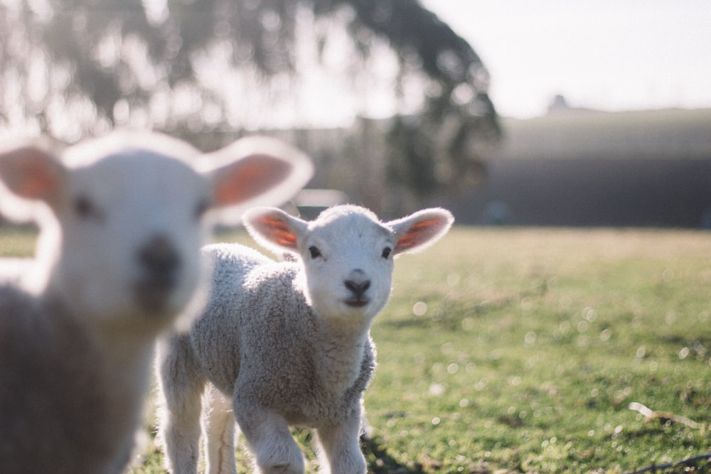

Sheep are herd animals and need to be with other sheep in order to have optimal well-being. ... While sheep need to be with their own kind, their gentle natures can make them wonderful for humans to be around. A lamb that is raised on a bottle can bond especially well with a human.Increasingly, sheep and other farm livestock are being kept as pets or companions. They can make good pets because they are a gentle animal and respond well to human contact. Lambs make great projects for children. ... Taking care of a sheep teaches children responsibility and respect for animals.
Most of us think of sheep as farm animals. We think of herds grazing amongst the fields and hillsides. That they’re raised for wool or meat instills this, but can they make good pets? Sheep are smarter than we normally think they are. They’re also often docile and can easily be trained. Having a pet sheep isn’t always simple or accessible for everyone.In this article, we’ll go over whether sheep make good pets and why you may want to think twice about getting a sheep as a pet. You’ll need to be aware of the pros and cons of keeping a sheep as a pet if you’re considering getting one in the future.
Sheep are herd animals and that poses some complications with raising them as pets. Caring for sheep is more demanding than many animals like dogs and cats. Some important considerations before getting a pet sheep are:
It’s generally out of the question to just have one sheep as a pet. Sheep are herd animals and need to be with other sheep in order to have optimal well-being.If you want to have sheep as pets, you will need to factor in the cost and time requirements of caring for several animals. At the very least you should have two sheep. Five or more is better since at that number they tend to start showing their natural flocking tendencies
While sheep need to be with their own kind, their gentle natures can make them wonderful for humans to be around. A lamb that is raised on a bottle can bond especially well with a human. This is because they are encouraged to think of the human feeding them as a maternal figure.Let’s take a look at some of the pros and cons of having sheep as pets:
If you have any questions or suggestions you can reach us at send email